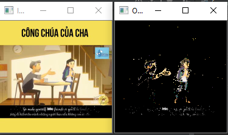
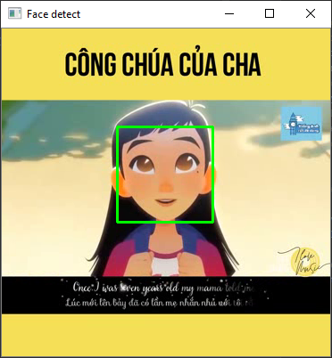

C13: Object Detection and Tracking
13
Object Detection and Tracking
Nhận diện và theo dõi vật thể
Trong chương này chúng ta sẽ học về nhận diện vật thể và theo dõi chuyển động của nó. CHúng ta sẽ bắt đầu bằng cách cài đặt thư viện OpenCV, đây là một thư viện rất thông dụng cho công nghệ máy nhìn (computer vision). Chúng ta sẽ thảo luận về sự khác biệt giữa các khung hình để có thể phát hiện các vật thể chuyển động trong video. Chúng ta sẽ học về cách theo đõi các vật thể bằng cách sử dụng không gian màu sắc . Chúng ta sẽ hiểu cách sử dụng loại bỏ neenf để theo dõi vật thể. Chúng ta sẽ xây dựng một bộ theo dõi vật thể động bằng cách sử dụng thuật toán CAMShift. Chúng ta sẽ học cách làm thể nào để xây dựng một bộ theo dõi ánh sang. Chúng ta sẽ thảo luận về phát hiện khuôn mặt và các khái niệm liên quan khác giống như Haar cascades và hình ảnh tích hợp (integral images). Chúng ta sẽ dùng những kỹ thuật đó để tổng hợp lên bộ theo dõi mắt .
Các phần chúng ta sẽ học trong chương này:
- Cài đặt OpenCV
- Phân biệt khung hình (Frame differencing)
- Theo dõi vật thể sử dụng không gian màu(colorspaces)
- Theo dõi vật thể sử dụng cách loại bỏ nền
- Xây dựng một bộ theo dõi động dùng thuật toán CAMShift
- Theo dõi vật thể với optical flow
- Nhận diên khuôn mặt
- Sử dụng Haar cascades để theo dõi vật thể
- Sử dụng tổng hợp hình ảnh để phân tách tính năng
- Phát hiện và theo dõi mắt
Cài đặt OpenCV
chúng ta sẽ sử dụng thư viện OpenCV trong chương này. Bạn có thể đọc thêm về nó tại trang http://opencv.org. Bạn phải cài thư viện này trước khi bắt đầu chuong này. Đây là trangg để install openCV 3,4 chạy cùng với Python 3 trên các hệ điều hành khác nhau
- Windows: https://solarianprogrammer.com/2016/09/17/install-opencv-3-with-python-3-on-windows/
- Ubuntu: https://www.pyimagesearch.com/2015/07/20/install-opencv-3-0-and-python-3-4-on-ubuntu
- Mac: https://www.pyimagesearch.com/2015/06/29/install-opencv-3-0-and-python-3-4-on-osx
Phân biệt giữa các khung hình
Phân biệt các khung hình là một kỹ thuật cơ bản nhất được sử dụng để nhận dạng giữa các vật thể trong một video. Khi chúng ta nhìn vào một video, những khác biệt giữa các khung hình liên tiếp được chụp lại cho chúng ta rất nhiều thông tin. Hãy xem bằng cách nào chúng ta có thể lấy những điểm khác nhau giữa các khung hình và hiển thị những điểm khác biệt đó. Code ở phần này yêu cầu máy bạn phải có webcam. nếu không bạn phải có 1 video để chơi cùng nó ( cuốn sách yêu cầu có webcam mà máy tao méo có nên tao chế thêm ớ).
import cv2
import os.path as path
#Tạo hàm để tính toán khác biệt của các khung hình. Bắt đầu bằng cách tính toán sự khác nhau giữa khung hình hiện tại và khung hình kế tiếp
def frame_dif(prev_frame,cur_frame,next_frame):
diff_frames_1=cv2.absdiff(next_frame,cur_frame)
#Tính toán sự khác nhau giữa khung hình hiện tại và khung hình trước đó
diff_frames_2=cv2.absdiff(cur_frame,prev_frame)
#sử dụng phép tính toán trên bit (bitwise) của openCV để tính toán sự khác nhau giữa các frames và trả lại giá trị đó
return cv2.bitwise_and(diff_frames_1,diff_frames_2)
#Tạo hàm để lấy khung hình hiện tại từ video.
def get_frame(cap:cv2.VideoCapture,scaling_factor):
try:
_,frame=cap.read()
# thu nhỏ khung hình
frame=cv2.resize(frame,None,fx=scaling_factor,fy=scaling_factor,interpolation=cv2.INTER_AREA)
# Chuyển đổi frame sang màu xám
gray=cv2.cvtColor(frame,cv2.COLOR_RGBA2GRAY)
print(gray)
except:
gray=None
return gray
#Tạo hàm main để lấy video
if __name__=="__main__":
cap=cv2.VideoCapture(path.join("../data/chap13/congai.mp4"));
scaling_factor=1
#Lấy khung hình hiện tại current frame, khung hình kế tiếp và khung hình trước (prev_frame,next frame)
prev_frame=get_frame(cap,scaling_factor)
cur_frame=get_frame(cap,scaling_factor)
next_frame=get_frame(cap,scaling_factor)
# Tạo vòng lặp tới khi kết thúc video
while cap.isOpened():
# đọc khung hình biến đầu tiên là giá trị boolean retval trả về True khi có thể đọc được video
ret,frame=cap.read()
print(ret)
if ret:
cv2.imshow('Theo dõi chuyển động',frame_dif(prev_frame,cur_frame,next_frame))
#Cập nhật frame
prev_frame=cur_frame
cur_frame=next_frame
next_frame=get_frame(cap,scaling_factor)
#Tạo waitkey để break (27 = keycode escape)
key=cv2.waitKey(100)
if key==27:
break
else:
break
# khi hết vòng lặp cần phải đóng video và destroy window
cap.release()
cv2.destroyAllWindows()
Nếu bạn làm đúng video sẽ hiện lên có dạng như sau:

Theo dõi vật thể dựa vào màu sắc
Thông tin lấy được từ việc nhận diện khác biệt giữa các khung hình rất hữ dụng, nhưng chúng ta sẽ không thể xây dựng một bộ theo dõi với nó. Những thông tin này khác nhiễu và nó không thực sự theo dõi một vật thể hoàn toàn. Để xây dựng một bộ theo dõi vật thể chúng ta cần biết được nét đặc trưng của mỗi vật thể và sử dụng nó để theo dõi chính xác hơn. Một hình ảnh có thể có nhiều màu sắc khác nhau. Màu RGB là cơ bản nhất trong những màu không gian cơ bản, nhưng nó không giúp chúng ta nhiều trong việc theo dõi vật thể. Vì thế chúng ta sẽ sử dụng màu HSV. Nó là một mã màu không gian mô phỏng gần với mắt con người nhìn thấy nhất. Bạn có thể đọc thêm về màu HSV ở trang này : https://en.wikipedia.org/wiki/HSL_and_HSV. Chúng ta có thể chuyển đổi những khung hình lấy được từ màu RGB và chuyển nó thành HSV, sau đó sử dụng ngưỡng màu ( color thresholding ) để theo dõi bất cứ vật thể nào. Chúng ta cần chú ý sự phân phối màu sắc của vật thể để chúng ta có thể chọn ngưỡng (thresholding) thích hợp.
import cv2
import numpy as np
# Lấy hàm get_frame từ code cũ
#from frame_differencing import get_frame,movie_path
#Tạo hàm để lấy khung hình
def get_frame(cap:cv2.VideoCapture,scaling_factor):
try:
_, frame = cap.read()
# thu nhỏ khung hình
frame = cv2.resize(frame, None, fx=scaling_factor, fy=scaling_factor, interpolation=cv2.INTER_AREA)
return frame
except:
gray = None
return gray
# Tạo hàm main
if __name__=="__main__":
#Lấy video từ file
cap=cv2.VideoCapture("../data/chap13/congai.mp4")
scaling_factor=0.5
# Tạo vong lặp
while cap.isOpened():
frame=get_frame(cap,scaling_factor)
#Chuyển mã màu sử dụng hàm convert của openCV
hsv=cv2.cvtColor(frame,cv2.COLOR_BGR2HSV)
# Tạo màu gần dúng với màu da của da người
lower=np.array([0,70,60])
upper=np.array([50,150,255])
#Tạo ngưỡng màu trong HSV để tạo lớp mask
mask=cv2.inRange(hsv,lower,upper)
# Tính toán sự khác nhau giữa 2 khung hình sử dụng mask và thuật toán bitwise_and cảu openCV
img_out=cv2.bitwise_and(frame,frame,mask=mask)
# sử dụng median blurring để làm đẹp hình
img_blurring=cv2.medianBlur(img_out,5)
# Hiển thị hình ảnh
cv2.imshow("Input",frame)
cv2.imshow("Output",img_blurring)
# Tạo wait key để chờ
k=cv2.waitKey(10)
if k==27:
break
cap.release()
cv2.destroyAllWindows()
Theo dõi vật thể sử dụng tách nền (background subtraction)
Tách nền là một kỹ thuật nhận diện hình nền trong một video và sau đó sử dụng nền đó để nhận dạng di chuyển của một vật thể. Kỹ thuật này sử dụng rất nhiều trong việc nén video cũng như kiểm soát nó. Thực iện việc này cũng được hiểu như dạng nhận dạng chuyển động trong một khung tĩnh. Thuật toán làm việc cơ bản là nhận diện nền (background), xây dựng một mô hình trên đó (build a model), và dựa vào đó để tách lấy vật thể tại khung hình hiện tại.
Bước chính ở đây là xây dựng một mô hình của nền. Nó không giống như là phân biệt khung hình khác nhau bởi chúng ta không có những khung hình liên tiếp. Chúng ta thực sự xây dựng một hình nền và liên tục cập nhật nó, dùng một thuật toán thích hợp có thể điều chỉnh. Đây là lý do vì sao nó thực hiện tốt hơn nhiều so với phân biệt khung hình.
import cv2
import numpy as np
# Lấy hàm getframe của phần trước
from object_tracking_withcolor import get_frame
#Tạo hàm main
if __name__=="__main__":
cap=cv2.VideoCapture("../data/chap13/congai.mp4")
# Tạo object background subtractor lấy từ OpenCV
bg_sub=cv2.createBackgroundSubtractorMOG2()
# Tạo một lịch sử hình ảnh để học
history=100
# Tạo một số của những khung hình trước để học, yếu tố này kiểm soát việc tần suất học của thuật toán.
# Tần suất học là tần suất mà mô hình của bạn sẽ học về hình nền. Giá tị cao đồng nghĩa với việc tần suất học chậm
# Bạn có thể thay đổi giá trị để xem sự khác biệt của việc tách nền.
learning_rate=1.0/history
# Tạo vòng lặp
while cap.isOpened():
frame=get_frame(cap,0.5)
# Tính toán mask sử dụng object tách nền đã định nghĩa ở trên
mask=bg_sub.apply(frame,learningRate=learning_rate)
# Mask ở đây là dạng màu xám chúng ta cần chuyển nó lại thành dạng RGB
mask=cv2.cvtColor(mask,cv2.COLOR_GRAY2BGR)
# Hiển thị kết quả
cv2.imshow("Input",frame)
cv2.imshow("Output",mask&frame)
k=cv2.waitKey(10)
if k==27:
break
cap.release()
cv2.destroyAllWindows()

Xây dựng bộ nhận diện chuyển động sử dụng thuật toán CAMShift
Theo dõi khoảng không gian màu giúp chúng ta có thể theo dõi những vật thể có màu, nhưng chúng ta phải định nghĩa theo dõi màu nào trước. Nó có vẻ có khá nhiều hạn chế. Giờ thì hãy xem làm cách nào chúng ta có thể chọn một vật thể trong một video và sau đó bộ theo dõi tự động sẽ theo dõi vật thể đó. Đây là lúc chúng ta sử dụng thuật toán CAMShift, nó có nghĩa là sự thay đổi trung bình liên tục (Continuously Adaptive Mean Shift). Về cơ bản đây là một dạng của thuật toán Mean Shift.
Để hiểu về CAMShift chúng ta cần phải biết Mean Shift làm việc thế nào. Giả sử một vùng được đưa ra trong một khung hình , chúng ta chọn vùng này bởi vì nó chứa vật thể chúng ta muốn theo dõi. Vì chúng ta cần theo dõi vật thể này nên chúng ta phải vẽ một khung xung quanh nó ( cái này được gọi là "vùng chọn"-region interest). Chúng ta muốn bộ theo dõi vật thể của chúng ta theo dõi vật thể này di chuyển thế nào trong video của chúng ta. Để làm việc này, chúng ta chọn một bộ dữ liệu gồm nhiều điểm dựa trên biểu đồ màu (color histogram) của vùng đó và sau đó tính toán điểm trung tâm. Nếu vị trí của điểm trung tâm tại trọng tâm của vùng đó thì ta biết hiện tại nó không di chuyển. Nhưng nếu vị trí trung tâm đó không phải là trọng tâm của vùng chọn thì có nghĩa là nó đã di chuyển. Điều đó có nghĩa là chúng ta cần di chuyển khung theo điểm trung tâm, sao cho trọng tâm của khung cũng là trọng tâm của vùng chọn. Chúng ta tiếp tục làm điều này theo nhiều khung hình và theo dõi vật thể theo thời gian thực. Vì thế thuật toán này được gọi Mean Shift bởi vì số mean ( điểm trọng tâm) liên tục di chuyển và chúng ta theo dõi vật thể sử dụng nó.
Giờ chúng ta hãy xem cách sử dụng CAMShift. Một vấn đề xảy ra với Mean Shiift là cỡ của vật thể không được thay đổi theo thời gian. Khi chúng ta vẽ một khung giới hạn nó sẽ giữ nguyên không thay đổi hình dạng dù ở gần hay xa camera, vì thế chúng ta cần phải sử dụng CAMShift bởi vì nó có thể đáp ứng việc thay đổi kích cỡ của khung giới hạn dựa trên kích cỡ của vật thể.
Đọc thêm về meanshift CamShift tại trang chủ của openCV: https://docs.opencv.org/4.1.2/d7/d00/tutorial_meanshift.html
import cv2
import numpy as np
#Tạo một class để quản lý tất cả các hàm sử dụng để theo dõi vật thể:
class ObjectTracker(object):
def __init__(self,scaling_factor=0.5):
#Tạo object cap để lấy video source
self.cap=cv2.VideoCapture("../data/chap13/sample.mp4")
self.startTrack=False
# Lấy khung hình hiện tại
_,self.frame=self.cap.read()
self.scaling_factor=scaling_factor
# Resize khung hình dựa trên scaling_factor
self.frame=cv2.resize(self.frame,None,fx=self.scaling_factor,fy=self.scaling_factor,interpolation=cv2.INTER_AREA)
# Tạo một cửa sổ để hiển thị khung hình
cv2.namedWindow("Object Tracker")
# Tạo hàm callback để lẩy dữ liệu hoạt động của mouse
cv2.setMouseCallback("Object Tracker",self.mouse_event)
# Tạo các biến cho class để theo dõi select của mouse
self.selection=None
self.drag_start=None
self.tracking_state=0
#Tạo hàm lấy event của mouse
def mouse_event(self,event,x,y,flags,param):
# Chuyển đổi giá trị tọa độ x,y của mouse thành dạng 16 bit
x,y=np.int16([x,y])
# khi chúng ta bấm chuột có nghĩa là bắt đầu lựa chọn khung để chọn vật thể
#if event==cv2.EVENT_LBUTTONUP:
if event==cv2.EVENT_LBUTTONDOWN:
self.drag_start=(x,y)
self.tracking_state=0
if self.drag_start:
if flags&cv2.EVENT_FLAG_LBUTTON:
#Lấy chiều dài,rộng của khung hình hiện tại
h,w=self.frame.shape[:2]
# Tính điểm tọa độ X,Y của khung hình
xi,yi=self.drag_start
# Tính toán vị trí nhỏ nhất và lớn nhất của vị trí kéo chuột dựa trên trục tọa độ để tính vùng chọn
x0,y0=np.maximum(0,np.minimum([xi,yi],[x,y]))
x1,y1=np.minimum([w,h],np.maximum([xi,yi],[x,y]))
self.selection=None
if x1-x0>0 and y1-y0>0:
self.selection=(x0,y0,x1,y1)
# Sao khi hoàn tất tính toán vị trí của vùng chọn thì đặt flag và chúng ta bắt đầu theo dõi vật thể dựa theo vùng chọn
else:
self.drag_start=None
if self.selection is not None:
self.tracking_state=1
# Tạo hàm theo dõi vật thể:
def start_tracking(self):
while True:
_,self.frame=self.cap.read()
self.frame=cv2.resize(self.frame,None,fx=self.scaling_factor,fy=self.scaling_factor,interpolation=cv2.INTER_AREA)
# Tạo một bản sao cho khung hình hiện tại chúng ta sẽ sử dụng nó sau
vis=self.frame.copy()
# Chuyển đổi màu từ RGB thành HSV
hsv=cv2.cvtColor(self.frame,cv2.COLOR_BGR2HSV)
# Tạo mask dựa trên ngưỡng màu xác định trước
lower=np.array((0.,0.,0.))
upper=np.array((255.,255.,255.))
mask=cv2.inRange(hsv,lowerb=lower,upperb=upper)
#Kiểm tra xem người dùng đã chọn vùng chọn chưa : ?
if self.selection:
x0,y0,x1,y1=self.selection
# tạo vùng chọn
self.track_window=(x0,y0,x1-x0,y1-y0)
# Tạo vùng chọn từ hình HSV như là một mask. Tính toán biểu đồ màu dựa trên vùng đó
hsv_roi=hsv[y0:y1,x0:x1]
mask_roi=mask[y0:y1,x0:x1]
histogram=cv2.calcHist([hsv_roi],[0],mask_roi,[16],[0,180])
cv2.normalize(histogram,histogram,0,255,cv2.NORM_MINMAX)
self.hist=histogram.reshape(-1)
vis_roi=vis[y0:y1,x0:x1]
# Tính toán sử dụng bitwise_not của vùng chọn
cv2.bitwise_not(vis_roi,vis_roi)
vis[mask==0]=0
if self.tracking_state==1:
self.selection=None
hsv_backproj=cv2.calcBackProject([hsv],[0],self.hist,[0,180],1)
hsv_backproj&=mask
# Chấm dứt theo dõi
term_crit=(cv2.TERM_CRITERIA_EPS|cv2.TermCriteria_COUNT,10,1)
#Áp dụng thuật toán CamShift
track_box,self.track_window=cv2.CamShift(hsv_backproj,self.track_window,term_crit)
# Vẽ hình ellip xung quanh vật theo dõi và hiển thị nó lên một cửa số
cv2.ellipse(vis,track_box,(0,255,0),thickness=2)
cv2.imshow("Object Tracker",vis)
# Tạo escape
k=cv2.waitKey(30)
if k==27:
break
self.cap.release()
cv2.destroyAllWindows()
# Tạo hàm main để chạy
if __name__=="__main__":
ob=ObjectTracker(1)
ob.start_tracking()
Hình bên trái phía dưới là hình khi ta chọn màu sẽ được chuyển đổi thành màu âm bản. Hình bên phải là khi detect object :D. Nói chung là detect theo màu của object khá là không chính xác. Muốn detect object một cách chính xác thì còn phải thêm nhiều thứ chứ không chỉ đơn giản làm theo cách trên .
Theo dõi vật thể với Optical Flow
Optical flow: Dự đoán chuyển động hình ảnh ở mỗi pixel từ các biến đổi độ sáng của hình ảnh theo thời gian.( Vì nó dài dòng cũng ko biết dịch sang tiếng Đông Lào thế nào nên để TA luôn)
Optical flow là một kỹ thuật rất hữu dụng được sử sụng nhiều trong Computer vision. Nó dùng những thay đổi điểm ảnh để theo dõi vật thể. Những điểm ảnh đặc trưng riêng được theo dõi liên tục qua những khung hình video. Khi chúng ta tìm ra một bộ điểm vector trong một khung hình, chúng ta sẽ tính toán sự thay đổi của những vector đó và theo dõi nó. Chúng ta sẽ biểu diễn di chuyển của những điểm vector đó thông qua các khung hình. Những vector đó được hiểu là những vector chuyển động. Có rất nhiều cách để biểu diễn được optical fllow, nhưng cách của Lucas-Kanade có lẽ là một trong những thứ thông dụng nhất. Các bạn có thẻ đọc thêm về nó ở đây: http://cseweb.ucsd.edu/classes/sp02/cse252/lucaskanade81.pdf
Bước đầu tiên là lựa chọn những điểm vector tính năng từ khung hình hiện tại. Với mỗi điểm đặc trưng được lựa chọn là một bộ điểm 3x3 (tính theo pixel) được tao ra với điểm đặc trưng được đặt ở trung tâm. Chúng ta giả sử rằng tất cả các điểm trong mỗi bộ điểm 3x3 có sự di chuyển giống nhau. Kích thước của window có thể thay đổi dựa theo biến đổi khung hình.
Trong mỗi bộ điểm, chúng ta sẽ tìm điểm giống nhau trong khung hình trước. Chúng ta sẽ chọn những điểm giống nhau nhất dựa trên một bộ số liệu. Diện tích tìm kiếm lớn hơn 3x3 bởi vì chúng ta tìm kiếm một loạt các bộ điểm 3x3 khác nhau để có được một bộ điểm gần nhất với bộ điểm hiện tại. Một khi chúng ta đạt được điều này đường dẫn từ điểm trung tâm của bộ điểm hiện tại và điểm trung tâm bộ điểm được tìm thấy sẽ trở thành vector chuyển động. Chúng ta làm điều tương tự để tính toán các vector chuyển động cho tất cả các bộ điểm khác.
import cv2
import numpy as np
# Tạo một hàm bắt đầu để theo dõi vật thể sự dụng optical flow.
def start_tracking():
cap=cv2.VideoCapture("../data/chap13/sample.mp4")
scaling_factor=0.5
#Tạo số frame sẽ theo dõi và số frames bỏ qua
num_frames_to_track=5
num_frames_jump=2
# Tạo biến đường theo dõi và frame index:
tracking_paths=[]
frame_index=0
#tạo các tham số dùng để theo dõi sử dụng thuật toán calcOpticalFlowPyrLK của openCV
#* window size: kích cỡ ô theo dõi
#* maxLevel
#* (temrmination criteria)
tracking_params=dict(winSize=(6,6),maxLevel=5,criteria=(cv2.TERM_CRITERIA_EPS|cv2.TERM_CRITERIA_COUNT,10,0.03))
# Tạo vòng Lặp
while True:
# Lấy khung hình
_,frame=cap.read()
# Resize
frame=cv2.resize(frame,None,fx=scaling_factor,fy=scaling_factor,interpolation=cv2.INTER_AREA)
# đổi màu
frame_gray=cv2.cvtColor(frame,cv2.COLOR_BGR2GRAY)
#Tạo một copy của khung hình
output_img=frame.copy()
# Kiểm tra xem độ dài của path đã tạo có lớn hơn 0 thì lấy hình ảnh
if len(tracking_paths)>0:
prev_img,current_img=prev_gray,frame_gray
# Tạo các điểm đặc trưng:
feature_points_0=np.float32([tp[-1] for tp in tracking_paths]).reshape(-1,1,2)
# Tính optical flow dựa trên những khung hình trước và khung hình hiện tại sử dụng các điểm đặc trưng và các tham số đã tạo
feature_points_1,_,_=cv2.calcOpticalFlowPyrLK(prev_img,current_img,feature_points_0,None,**tracking_params)
# Tạo một hàm tính ngược optical flow
feature_points_0_rev,_,_=cv2.calcOpticalFlowPyrLK(current_img,prev_img,feature_points_1,None,**tracking_params)
# Tính toán điểm khác nhau giữa 2 phép tính optical flow lấy số dương
diff_feature_points=abs(feature_points_1-feature_points_0_rev).reshape(-1,2).max(-1)
# Lấy những điểm có giá trị tốt
good_points=diff_feature_points<1
#Tạo tracking path mới
new_tracking_paths=[]
# Lặp mảng good_points để vẽ hình lên đó
for tp,(x,y),good_points_flag in zip(tracking_paths,feature_points_1.reshape(-1,2),good_points):
if not good_points_flag:
continue
tp.append((x,y))
if len(tp)>num_frames_to_track:
del tp[0]
new_tracking_paths.append(tp)
# Vẽ hình
cv2.circle(output_img,(x,y),1,(0,255,0),-1)
# cập nhật tracking path
tracking_paths=new_tracking_paths
# Vẽ đường thằng nối các điểm
cv2.polylines(output_img,[np.int32(tp) for tp in tracking_paths],False,(0,150,0))
if not frame_index%num_frames_jump:
# Tạo mask và vẽ vòng tròn
mask=np.zeros_like(frame_gray)
mask[:]=255
for x,y in[np.int32(tp[-1]) for tp in tracking_paths]:
cv2.circle(mask,(x,y),6,0,-1)
# Sử dụng hàm có sẵn của openCV đỉ tính các điểm đặc trưng
feature_points=cv2.goodFeaturesToTrack(frame_gray,mask=mask,maxCorners=100,qualityLevel=0.3,minDistance=5,blockSize=3)
# Nếu có những điểm đặc trưng giá trị tốt thì thêm nó vào tracking path
if feature_points is not None:
for m,n in np.float32(feature_points).reshape(-1,2):
tracking_paths.append([(m,n)])
frame_index+=1
prev_gray=frame_gray
# Hiển thị hình ảnh
cv2.imshow("Optical Flow", output_img)
# Tạo waitKey
k=cv2.waitKey(1)
if k==27:
break
if __name__ == '__main__':
start_tracking()
cv2.destroyAllWindows()
Phát hiện và theo dõi khuôn mặt
Phát hiện khuôn mặt là phát hiện vị trí của một khuôn mặt trong một khung hình. Nó thường gây nhầm lẫn với nhận diện gương mặt – đây là quá trình xử lý để nhận diện khuôn mặt đó thuộc về người nào. Một hệ thống sinh trắc học (biometric system) thường sử dụng cả nhận diện khuôn mặt và nhận dạng khuôn mặt để thực hiện nhiệm vụ. Nó sử dụng phát hiện khuôn mặt để tìm vị trí của khuôn mặt và sau đó dùng nhận dạng khuôn mặt để nhận dạng người đó là ai. Trong phần này chúng ta sẽ học cách tự động phát hiện vị trí của khuôn mặt trong một đoạn video và theo dõi khuôn mặt đó.
Sử dụng Haar cascades để nhận dạng vật thể
Chúng ta sẽ sử dụng Haar cascades để phát hiện khuôn mặt trong một video. Haar cascades có nghĩa là một bộ tầng(cascades) phân loại dựa trên đặc tính Haar. Paul viola và Michael Jones lần đầu tiên giới thiệu về phương pháp phát hiện đối tượng trong tài liệu nghiên cứu của họ vào năm 2001. Bạn có thể xem tài liệu đó ở đây: https://www.cs.cmu.edu/~efros/courses/LBMV07/Papers/viola-cvpr-01.pdf Trong báo cáo của họ, họ mô tả một kỹ thuật Machine Learning hiệu quả có thể sử dụng để phát hiện bất cứ vật thể nào.
Họ sử dụng các tầng(cascade) của bộ phân loại đơn giản. Các tầng (cascades) này được xếp chồng lên để tổng hợp xây dựng một vài bộ phân loại hiệu quả với độ chính xác cao. Chúng ta sử dụng nó vì nó giúp chúng ta bỏ qua quy trình xây dựng bộ phân loại và lại có độ chính xác cao. Xây dựng một bộ phân loại mạnh mẽ như thế là một quá trình tính toán phức tạp.
Hãy xem xét một vài ví dụ mà chúng ta phải phát hiện một số vật thể như quả bóng đá . Để xây dựng một bộ phát hiện chúng ta cần một hế thống có thể học quả bóng nhìn giống như thế nào. Chúng ta cần train hệ thống đó sử dụng rất nhiều hình ảnh về quả bóng đa. và chúng ta cũng cần rất nhiều hình ảnh không chứa quả bóng luôn :D. Nó sẽ giúp hệ thống học điểm khác nhau giữa các vật thể.
Nếu chúng ta xây dựng một mô hình chính xác cao thì sẽ rất phức tạp. Vì thế chúng ta sẽ không thể tốn quá nhiều thời gian vì nó. nếu quá đơn giản thì hệ thống sẽ không chính xác. Sự đánh dổi giữa tốc độ và độ chính xác thường xuyên gặp phải trong thế giới của Machine Learning. Phương pháp của Viola-Jones khắc phục vấn đề này bằng cách xây dựng một bộ phân loại đơn giản. Những phân loại này sau đó được xếp thành các tầng (cascade) để tạo thành một bộ phân loại thống nhất, mạnh mẽ và chính xác.
Hãy xem thử áp dụng vào phát hiện khuôn mặt. Để xây dựng một hệ thống ML để phát hiện khuôn mặt, trước hết trúng ta cần xây dựng một bộ phân tách đặc điểm. Các thuật toán ML sẽ sử dụng các đặc điểm này để hiểu khuôn mặt trông như thế nào. Đây là lúc chúng ta sử dụng đặc điểm của Haar( Haar features). Chúng đơn giản chỉ là tổng kết tóm tắt đơn giản và sự khác biệt của các phần trên khung hình (hoặc bức ảnh). Những đặc điểm của Haar thật sự dễ dành để tính toán. Để làm nó dễ dàng và phát triển, chúng ta cần làm việc này ở nhiều cỡ hình ảnh khác nhau. Nếu bạn muốn học thêm về Haar features thì có thể xem tiếp ở đây : https://www.cs.ubc.ca/~lowe/425/slides/13-ViolaJones.pdf
Mỗi một đặc điểm được chọn ra, chúng ta cho nó vào các tầng (cascades) tăng cường của bộ phân loại. Chúng ta sẽ kiểm tra các vùng hình chữ nhật khác nhau và loại bỏ những vùng không chứa khuôn mặt. Nó sẽ giúp chúng ta tìm được câu trả lời nhanh hơn. Để làm việc tính toán các đặc điểm nhanh hơn, họ sử dụng một phương pháp được gọi là tích hợp hình ảnh (integral images)
Sử dụng tích hợp hình ảnh để rút ra đặc điểm
Để tính toán các đặc điểm của Haar, chúng ta phải tính toán diện tích và khác biệt của rất nhiều khung hình nhỏ trong một bức ảnh. Chúng ta cần tính những diện tích và khác tại nhiều mức đo khác nhau.
Xem hình dưới đây
Nếu chúng ta muốn tính diện tích hình chữ nhật ABCD trong hình trên, chúng ta không cần phải biết từng pixel của hình. Giả sử ta có OP là diện tích hình chữ nhật lớn với điểm P tại góc dưới cùng bên phải . Để tích diện tích của hình chữ nhật ABCD chúng ta có thể sử dụng công thức sau: ABCD=OC-(OB+OD-OA)
Có điều gì đặc biệt trong công thức này ? Nếu bạn chú ý thì bạn có thể thấy chúng ta không phải lặp lại bất cứ ddieuf gì hoặc tính toán tại bất kỳ diện tích hình chữ nhật nào. Tất cả giá trị bên bên tay phải đã được tính bởi vì chúng đã được tính trong các phần trước. Chúng ta sử dụng chúng một cách trực tiếp để tính toán diện tích hình chữ nhật được đặt ra.
Giờ thì code bộ nhận diện khuôn mặt:
import cv2
# Load dữ liệu Haar cascade xml
face_cascade=cv2.CascadeClassifier('../data/chap13/haarcascade/haarcascade_frontalface_default.xml')
# Kiểm tra xem file xml đã đc load hay chưa
if face_cascade.empty():
raise IOError('Méo có file')
#Khởi tạo các thông số video
cap=cv2.VideoCapture('../data/chap13/sample.mp4')
scale_factor=1
# Tạo vòng lặp để lấy video
while True:
_,frame=cap.read()
frame=cv2.resize(frame,None,fx=scale_factor,fy=scale_factor,interpolation=cv2.INTER_AREA)
# đổi khung hình thành màu xám
gray=cv2.cvtColor(frame,cv2.COLOR_BGR2GRAY)
# Chạy hàm nhận diện khuôn mặt dựa trên khung hình màu xám
face_rects=face_cascade.detectMultiScale(gray,1.3,5)
#Tạo vòng lặp để vẽ hình chữ nhật lên trên khuôn mặt đã phát hiện
for (x,y,w,h) in face_rects:
cv2.rectangle(frame,(x,y),(x+w,y+h),(0,255.0,0),2)
#Hiển thị hình ảnh video
cv2.imshow("Face detect",frame)
k=cv2.waitKey(30)
if k==27:
break
cap.release()
cv2.destroyAllWindows()

Nhận dạng mắt và theo dõi
Giống như những gì ta đã làm bên trên thôi ngoài ra thêm một cascade eye xml
import cv2
# Load dữ liệu Haar cascade xml
face_cascade=cv2.CascadeClassifier('../data/chap13/haarcascade/haarcascade_frontalface_default.xml')
# Load dữ liệu eye xml
eyes_cascade=cv2.CascadeClassifier('../data/chap13/haarcascade/haarcascade_eye_tree_eyeglasses.xml')
# Kiểm tra xem file xml face đã đc load hay chưa
if face_cascade.empty():
raise IOError('Méo có file')
# Kiểm tra xem file xml face đã đc load hay chưa
if eyes_cascade.empty():
raise IOError('Méo có file eye xml')
#Khởi tạo các thông số video
cap=cv2.VideoCapture('../data/chap13/congai.mp4')
scale_factor=1
# Tạo vòng lặp để lấy video
while True:
_,frame=cap.read()
frame=cv2.resize(frame,None,fx=scale_factor,fy=scale_factor,interpolation=cv2.INTER_AREA)
# đổi khung hình thành màu xám
gray=cv2.cvtColor(frame,cv2.COLOR_BGR2GRAY)
# Chạy hàm nhận diện khuôn mặt dựa trên khung hình màu xám
face_rects=face_cascade.detectMultiScale(gray,1.1,3)
#Tạo vòng lặp để vẽ hình chữ nhật lên trên khuôn mặt đã phát hiện
for (x,y,w,h) in face_rects:
cv2.rectangle(frame,(x,y),(x+w,y+h),(0,255.0,0),2)
# Dựa vào vị trí của face để lấy vị trí của mắt dựa trên face - ĐỔi màu face thành gray luôn
face_gray=gray[y:y+h,x:x+w]
# Lấy mặt có màu
face_color=frame[y:y+h,x:x+w]
#TÌm vị trí của mắt
eyes=eyes_cascade.detectMultiScale(face_gray)
# Vẽ vòng tròn quanh mắt
for (x_eye,y_eye,w_eye,h_eye) in eyes:
center=(int(x_eye+w_eye/2),int(y_eye+h_eye/2))
radius=int(0.3*(w_eye+h_eye))
color=(255,0,0)
cv2.circle(face_color,center=center,radius=radius,color=color,thickness=2)
#Hiển thị hình ảnh video
cv2.imshow("Face detect",frame)
k=cv2.waitKey(20)
if k==27:
break
cap.release()
cv2.destroyAllWindows()
Tổng kết:
Trong chương này chúng ta đã tìm hiểu về object detection và tracking nó sử dụng bộ thư viện OpenCV.
Trong chương tiếp theo chúng ta sẽ thảo luận về mạng lưới thần kinh nhân tạo :D (nghe tởm vãi lái ) artificial neural network và sử dụng những kỹ thuật đó để xây dựng một bộ nhận diện chữ viết (OCR – Optical character recognition)